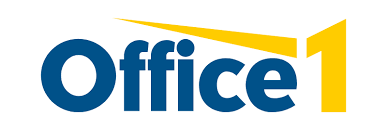
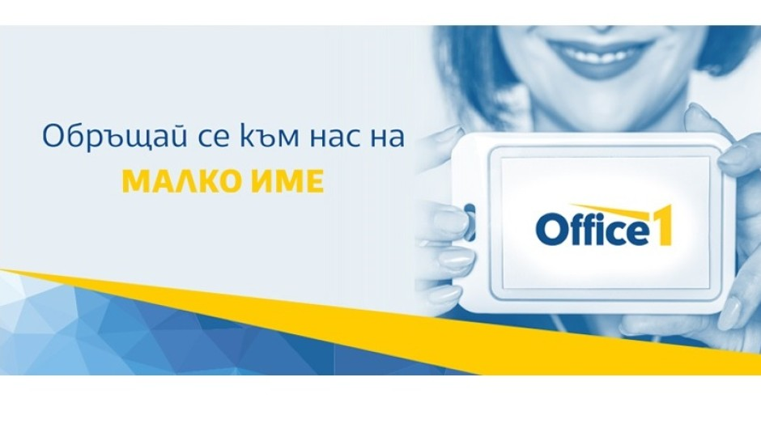

Добре дошли на информативната страница за моят дипломен проект по интернет маркетинг. В този проект ще ви запозная с една доста успешна българска фирма - Office 1.
Историята на компанията започва през 1991 г., когато двама приятели наемат гараж и закупуват копирна машина, инвестирайки в мечтите си за бъдещето. Това е началото на фирма „Панда“, която се превръща в лидер в сферата на канцеларските материали дълго преди да стане Office1 – по онова време тя е позната като верига книжарници „Панда“.
През следващите години към основателите се присъединяват техни приятели, сформирайки Кооперация „Панда“, а през 1998 г. у нас навлиза и марката Office 1 Superstore с отварянето на първия магазин в гр. София. Надграждането на продуктите и услугите продължава с всяка изминала година и през 2018 г. Кооперация „Панда“, безспорен лидер с над 40% пазарен дял, прави две огромни стъпки за българска компания: от успешен франчайзер на Office 1 Superstore се превръща в единствен собственик на марката за цял свят, закупувайки правата от американския основател, и открива най-автоматизирания логистичен център в Югоизточна Европа.
През годините Office 1 е минал през немалко препятствия, но е съумял да запази своите ценности и мечти. Възможността да придобием глобалните права върху марката Office 1 Superstore бе резултат от дългогодишната ни дейност като най-успешния франчайзер на веригата в света.
Днес Office 1 предлага над 120 000 артикула в 16 продуктови категории, от които 16 000 в наличност и по този показател изпреварва всичките си конкуренти. Благодарение на екипа от професионалисти и австрийската система за обработка на стока в складово-логистичния център, експедираме оттам над 1 200 поръчки дневно с доставка за 1 работен ден – също предимство, което дава спокойствие на клиентите ни и им доказва, че могат да разчитат на нас във всеки един момент.